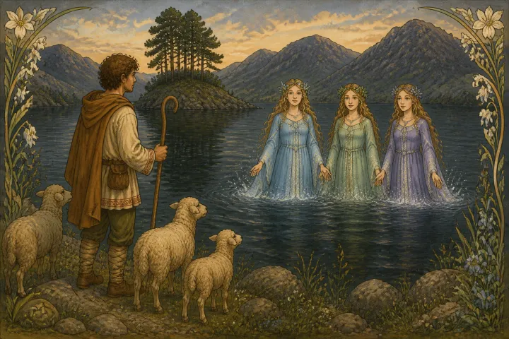
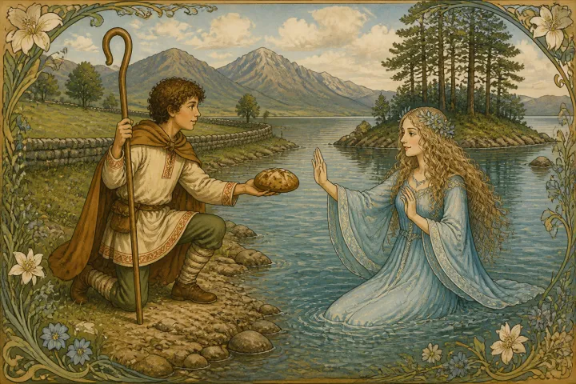
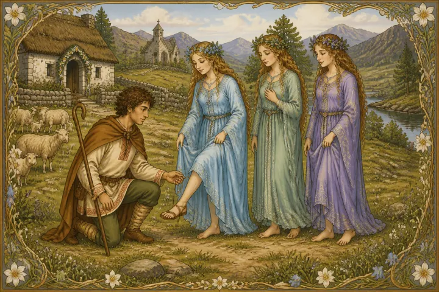
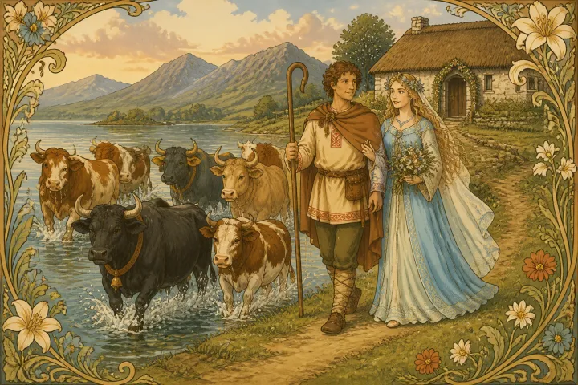
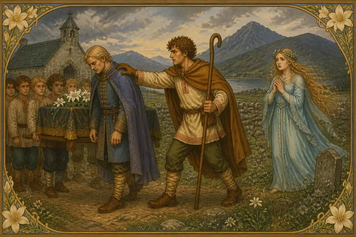
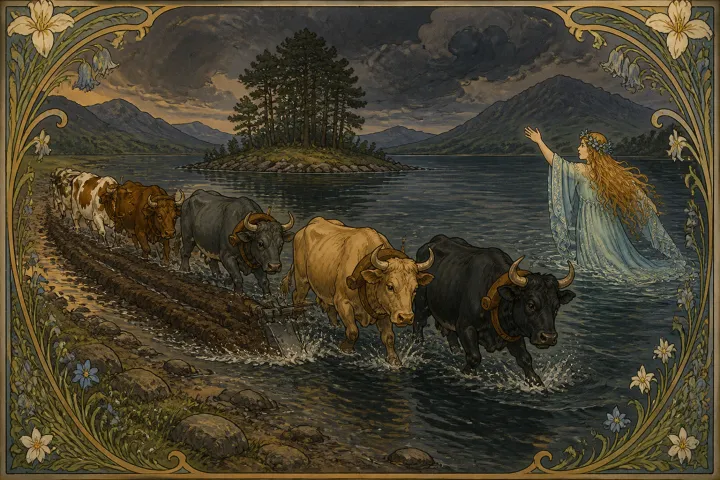
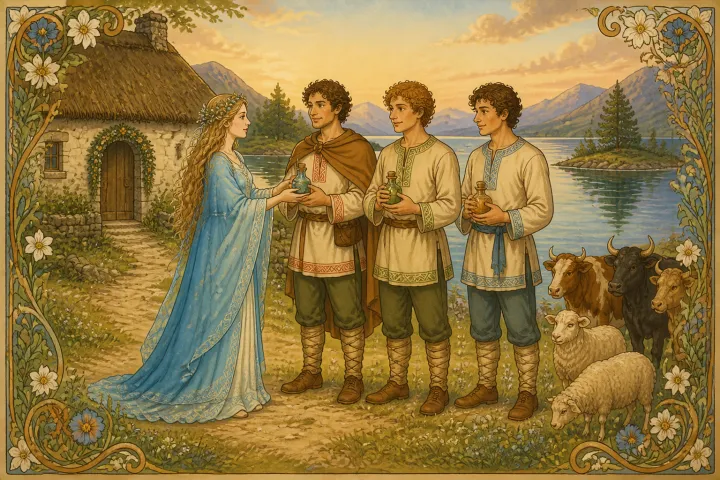

Up in the Black Mountains in Caermarthenshire lies the lake known as Lyn y Van Vach. To the margin of this lake the shepherd of Myddvai once led his lambs, and lay there whilst they sought pasture. Suddenly, from the dark waters of the lake, he saw three maidens rise. Shaking the bright drops from their hair and gliding to the shore they wandered about amongst his flock. They had more than mortal beauty, and he was filled with love for her that came nearest to him. He offered her the bread he had with him, and she took it and tried it, but then sang to him:

"Hard-baked is thy bread, 'Tis not easy to catch me,"
and then ran off laughing to the lake.
Next day he took with him bread not so well done, and watched for the maidens. When they came ashore he offered his bread as before, and the maiden tasted it and sang:
"Unbaked is thy bread, I will not have thee,"
and again disappeared in the waves.
A third time did the shepherd of Myddvai try to attract the maiden, and this time he offered bread that he had found floating about near the shore. This pleased her, and she promised to become his wife if he were able to pick her out from among her sisters on the following day. When the time came

the shepherd knew his love by the strap of her sandal. Then she told him she would be as good a wife to him as any earthly maiden could be unless he should strike her three times without cause. Of course he deemed that this could never be; and she

summoning from the lake three cows, two oxen, and a bull, as her marriage portion, was led homeward by him as his bride.
The years passed happily, and three children were born to the shepherd and the lake-maiden. But one day they were going to a christening, and she said to her husband it was far to walk, so he told her to go for the horses.
"I will," said she, "If you bring me my gloves which I've left in the house."
But when he came back with the gloves he found she had not gone for the horses; so he tapped her lightly on the shoulder with the gloves, and said, "Go, go."
"That's one," said she.
Another time they were at a wedding, when suddenly the lake-maiden fell a-sobbing and a-weeping, amid the joy and mirth of all around her.
Her husband tapped her on the shoulder, and asked her, "Why do you weep?"
"Because they are entering into trouble; and trouble is upon you; for that is the second causeless blow you have given me. Be careful; the third is the last."
The husband was very careful never to strike her. But one day at a funeral she suddenly burst out into fits of laughter. Her husband forgot, and touched her rather roughly on the shoulder, saying, "Is this a time for laughter?"
"I laugh," she said, "because those that die go out of trouble, but your trouble has come.

The last blow has been struck; our marriage is at an end, and so farewell." And with that she rose up and left the house and went to their home.
Then she, looking round upon her home, called to the cattle she had brought with her:
"Brindle cow, white speckled, Spotted cow, bold freckled, Old white face, and grey Geringer, And the white bull from the king's coast Grey ox, and black calf, All, all, follow me home."
Now the black calf had just been slaughtered, and was hanging on the hook; but it got off the hook alive and well and followed her; and the oxen, though they were ploughing, trailed the plough with them and did her bidding. So

she fled to the lake again, they following her, and with them plunged into the dark waters. And to this day is the furrow seen which the plough left as it was dragged across the mountains to the tarn.
Only once did she come again, when her sons were grown to manhood, and then she gave them gifts of healing by which they won the name of Meddygon Myddvai, the physicians of Myddvai.
